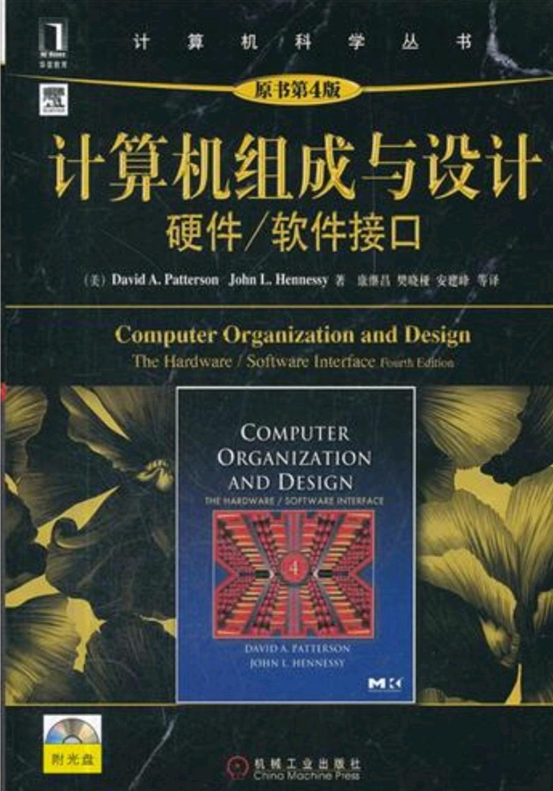
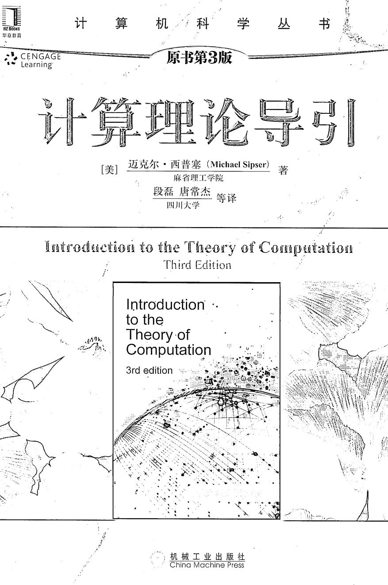
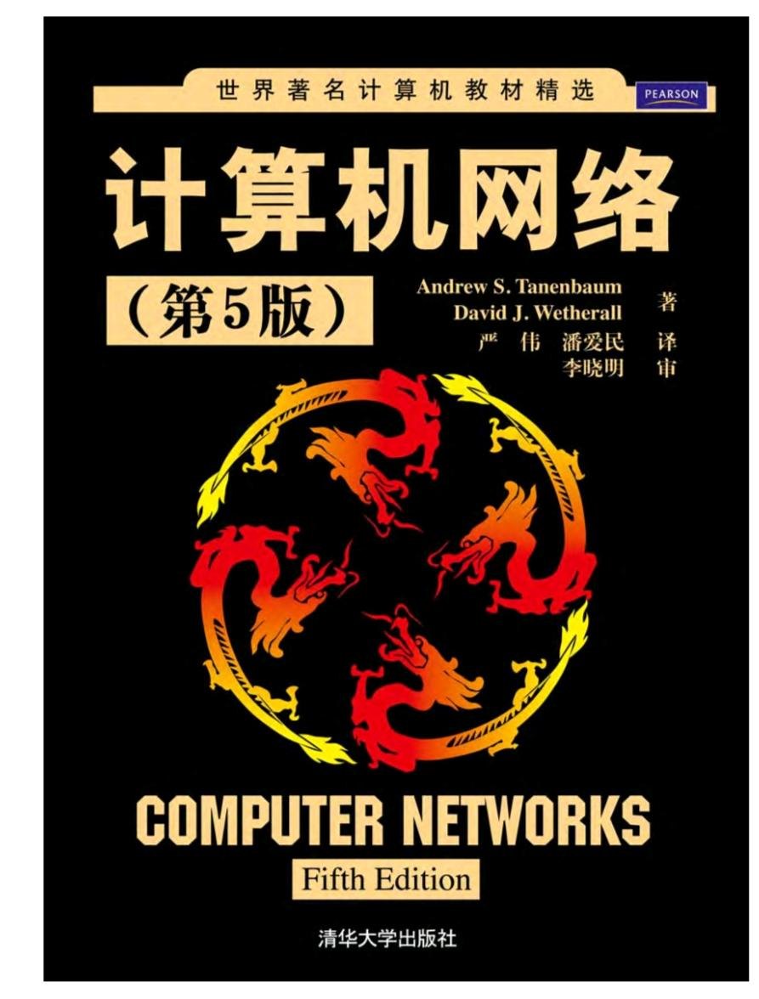
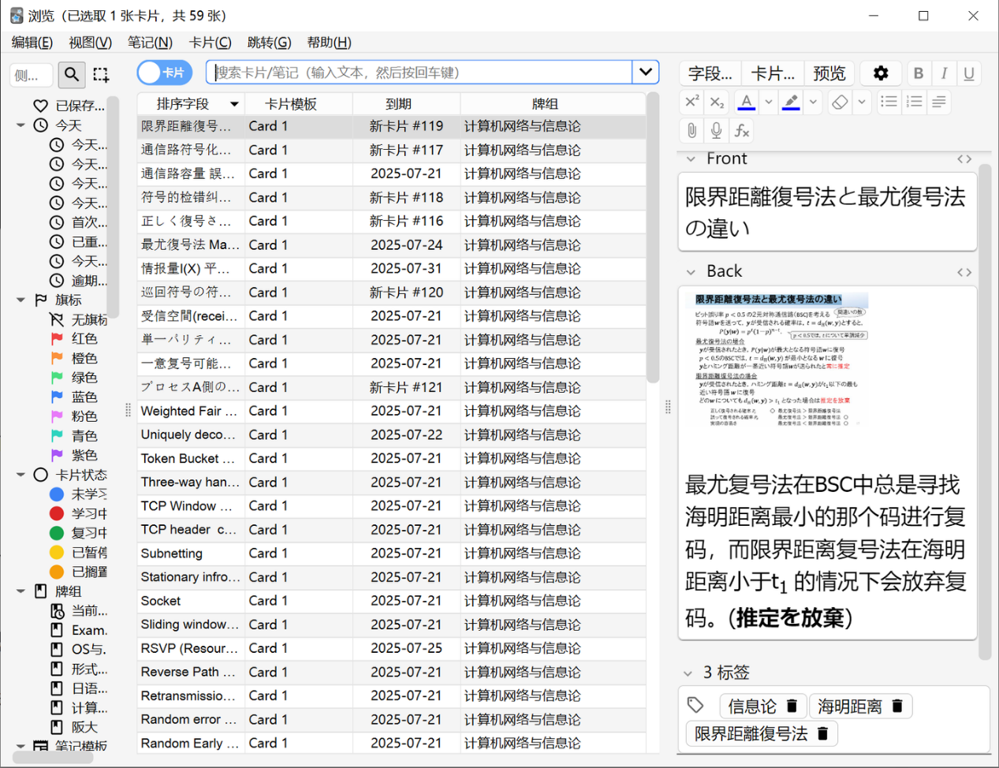
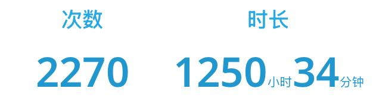

时间线
我最初是以东大创情为目标，系统学习了数电、计组、计网、算法、计算机图形学、机器学习、概率论、线性代数、信息论、形式语言与自动机、操作系统。往年创情夏入的书类通过率很高，但是今年创情的书类选拔十分残忍，光是书类就筛掉近一半的人，其中也包含我。
所幸是在想着多做一校的过去问可以避免复习过拟合，就同时出愿了大阪大学情报科学。感谢阪大让我还有书可以读。
24.8 – 24.12备考 JLPT N2，于12月拿下 N2。
25.1 – 25.3备考托福，于3月托福出分。
第一轮复习过一遍书和视频，让所有知识点在脑子里有一个印象。
25.3计算机网络、计算机组成原理第一轮复习。
25.4计算机组成原理、数电第一轮复习。
25.5信息论、形式语言与自动机、操作系统第一轮复习。
第二轮复习是面向过去问，当刷到了自己不熟悉的知识点的时候，把一整个模块的知识重新看书复习一遍。
25.6 – 25.7刷完阪大过去问09到23年的全部过去问、第二、第三轮复习。
第三轮复习是由于在做阪大过去问的过程中发现很多日语专有名词经常反应不过来对应英文名词是啥，经常在选词填空的题目上吃大亏，而且英语教材和日语教材的知识点侧重也不太一样，阪大修考更偏向日语教材的知识框架，所以我把所有科目的日语教材重新看了一遍。
7月31号赴日，8月1号刷24、25年题保持手感。
8月2号笔试。刚出来感觉情况还行，但是和同行的哥们一对答案之后发现在相当简单的题目白给了至少70分，算了算分感觉最坏情况下可能只有65%，心态直接炸裂。8月3号在酒店里自闭了一天哪都没去，在床上刷boss直聘刷b站美食视频怀念国内的烧烤。
8月4号面试完出现反转，面试出来我就已经知道合的几率80%往上了。
备考科目解析
算法
阪大过去问的考法是给出代码，考你算法名字、复杂度、顺序排序改成逆序排序这种实现的细节部分。重点在排序和查找，唯一一次例外是动态规划的01背包，但是也是非常简单，王道算法基本涵盖全部内容。
计组
前期学习主要看大黑书，同时王道计组视频补漏，后期看坂井修一的日语教材。在流水线这一块阪大出过十分逆天的构成结构，不过后面几年的出法基本都按照大黑书的流水线结构了。

操作系统
王道操作系统全部涵盖。
自动机
学习：b站哈工大。刷题：Sipser 的《计算理论导引》第一第二章。

计网
依旧大黑书+王道。除了去年叛逆了一年之外，其他时候大部分时间考的数据链路层、网络层、传输层。

信息论
北海道 PPT，看完一遍发现有的地方没看太懂，于是看了一遍今井秀树的情报理论。
一开始是通过写笔记的方式整理知识点，后面发现写的笔记基本不会再去翻第二遍，查找笔记的过程也十分麻烦。
所以最后的复习巩固就靠 Anki 整理知识点，就这样每天一遍一遍地过。

笔试情况
考试前一天晚上睡觉着凉了，早上起来头痛欲裂，状态十分差。
算法
极其简单的冒泡排序和二分查找，25分钟做完。但是在处理循环边界和循环次数的两道题上出错了，直接猛扣50分。
得分：75 / 125
计组
二进制数，浮点数 IEEE754。这个在课本上没复习到，但是之前刷过去问的时候做错过，于是反复钻研了，今年考浮点数直接什么前置知识都没给硬考。第二题是调度算法。
得分：105 / 125
形式语言与自动机
做到这的时候已经开始头晕了，题目问的是图1图2それぞれ做状态转移图，眼花了只做了图1的状态转移图。
第二题问了一道 DFA 的并集形式构造。这道题按书里的格式，合并起来的状态应该要以元组 (q1, q2) 的形式回答，但是完全没有元组的印象，整道题纯靠推理推出来，回答的时候用 q1q2 的形式表示一个合并状态。这里总分值45分，劝退了不少人，十分夸张。
第三题完答。
得分：105 / 125
计算机网络
做到这里的时候还剩70分钟，但是已经感觉开始走马灯了，考场空调很冷。面对一整页的日语题目直接晕掉。看了看题目，问的是 distance vector 算法和 link-state 算法，不过是让你推导每一次路由表更新的结果。用十多分钟调整了一下状态，看了很久做了出来，最后一题硬着头皮答了个 TTL，不知道对不对。
得分：90 / 125，或者完答。
总结：算法和自动机加起来白给了70分，虽然可以归咎为考试当天的状态问题——在计网部分花掉了太多的时间，导致没有留时间检查，但是真的十分不甘心，十分懊悔。从8月2号晚上开始一直到8月3号下午，在酒店房间内反复看着错了的题目，不断试图说服自己调整心态：没办法，就这样了，只能回家找工作了。那两天躺在酒店床上，从未感觉时间过得如此漫长。
面试
下午场面试，上午场同行的哥们被问了「不会用日语面试为什么还来日本考试」，于是就提前准备了相关的措辞。好在 MM 的教授很好，一进门就用英语问：你可以说日语吗？请求用英语之后也没有过多为难，直接开始了面试。
你觉得你昨天考的怎么样？
答：得分率65%到70%之间吧，哪些哪些地方犯了很低级的错误。
如果你的第一志愿实验室没有名额了，xxxx 实验室的研究你感兴趣吗？
教授在讲到实验室名称的时候是用片假名的形式说的，直接懵了完全没听懂，还以为 MM 落了合了 BIO。于是让教授再说了一遍，OK 还是没懂。只听到了第一志愿落、第二志愿吧啦吧啦感不感兴趣，就回答了说我感兴趣的 OK 的。
如果你合格了，你想做什么研究？
因为上面以为自己要去 BIO 二面了，所以这里回答了说用计算机技术做 cell 和 gene 的研究（虽然自己完全不懂hhh）。
然后就让出来了，我还在疑惑为什么没有让我去二面什么的，后面一想不对啊我从头到尾听了两次没听到类似 BIO 的片假名啊，于是就想明白了——哦，是说我志愿实验室的事情。
面完出来已经要热泪盈眶了，反复查看经验贴和回想面试内容，确定了这个是合格面该有的样子，回到酒店之后就给家人报喜了。
一些感想
也不清楚自己属于是运气好还是运气差：出乎意料的东大书类落，东大梦破碎；阪大笔试发挥不尽人意，但是却顺利过线。好在是有个还不错的结果，给这1250小时的努力画上了句号。
